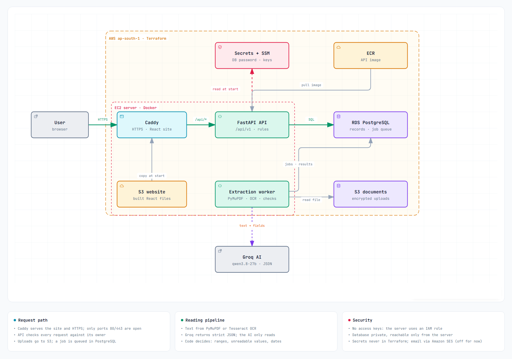
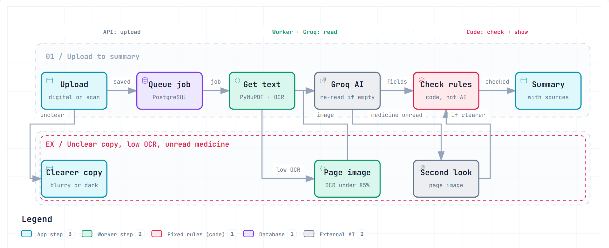

Healthfolio
An AI healthcare decision-support system for individuals. People upload their own medical documents (lab reports, prescriptions, discharge summaries, consultation notes, imaging, pathology and specialist reports). A background worker reads them into structured records, and the app shows rule-based summaries, a timeline, alerts, follow-ups, a health profile, and cited AI summaries. It informs; it does not diagnose or replace a doctor.
Evidence rule for this page. Every status below comes from the repository: specifications, code, tests, configuration, and the end-to-end guide. Planned work is never counted as done. AI accuracy has not been rigorously validated: evaluation uses synthetic documents only, and the 98% critical-field release gate is not met.
Development tracker
click a stage to jumpBar = share of the stage's documented scope with implementation evidence (an estimate from the evidence listed in each section, not a measured metric).
1. Requirements and specifications
DoneProblem. Records are scattered across hospitals, labs, and clinics in mixed formats; comparing reports and tracking follow-ups by hand loses information. Users: individuals managing their own records, including chronic-condition and post-procedure monitoring (goal_spec.md §2–3).
MVP scope (initial release)
- Record management with preserved originals (UC-1, F-2)
- Document processing and structured observations (F-3, F-4)
- Medication tracking with history (UC-4, F-5)
- Chronological history (UC-2, F-6)
- Follow-ups shown in the app (UC-5, F-7)
- Cited AI summaries (F-8) and rule-based safety alerts (UC-8, F-9)
- Privacy, export, deletion (F-11, F-12)
- Trend comparison (UC-3) and Health Q&A (UC-7): deferred
- Automated reminder delivery: deferred
- Caregiver/clinician access, EHR integration: future
- Autonomous diagnosis or treatment changes: out of scope
- Interpreting raw medical images: out of scope
The seven specification files
| Spec | Owns | Lines |
|---|---|---|
| goal_spec.md | Product goals, use cases (UC-1…8), features (F-1…12), acceptance criteria AC-01…13 | 209 |
| backend_spec.md | Architecture, API design, jobs and retries, data management, ingestion, security | 860 |
| AI_spec.md | Classification, OCR, extraction, validation decisions (dated), summaries, release gates | 351 |
| api_contract_spec.md | Every endpoint, request/response shapes, error codes, processing states | 603 |
| data_model_spec.md | Tables, constraints, tombstones, history tables | 259 |
| frontend_spec.md | Screens, UX principles, accessibility, testing | 425 |
| observability_and_reliability_spec.md | Logging, sensitive-data rule, health checks, backup targets, audit retention | 224 |
Specs are the source of truth: decided behaviour changes are recorded in the owning spec with a date (e.g. AI_spec.md §4.5), and each topic has one owning spec.
2. System design and architecture
Done
Components
| Layer | Technology | Where |
|---|---|---|
| Frontend | React 19, Vite 8, TypeScript 6, React Router 7 | frontend/src (feature folders) |
| API | FastAPI, Pydantic, SQLAlchemy 2, Alembic | backend/app/api/v1 → services → repositories/models |
| Worker | Python process polling the processing_jobs table | worker.py, extraction_service.py |
| AI reading | PyMuPDF, Tesseract OCR 5, Groq (strict JSON schema) | backend/app/ai |
| Database | PostgreSQL 16 (Docker locally, Amazon RDS deployed) | 21 tables, 21 Alembic migrations |
| Files | Local disk or private S3, behind a storage interface | storage.py |
| Infrastructure | Terraform, Docker, Caddy, systemd | infra/ |
Data flow
Database (21 tables)
users, refresh_tokens, password_reset_tokens, audit_events, email_deliveriesdocuments, processing_jobs, observations, ai_summariesmedications, medication_history, conditions, suggestions, follow_ups, vital_readingsprofile_values, profile_value_history, medical_record_items, safety_rules, alerts, alert_eventsDeleted documents become tombstones (file removed, identifying fields cleared, row kept for audit integrity), and since 2026-10-18 every record linked to a deleted document is deleted with it.
3. Document processing pipeline
Built
| Step | What happens | Evidence |
|---|---|---|
| Upload | PDF, JPEG, PNG up to 20 MB; scans and photos checked for blur, darkness, blank pages, size; duplicates by SHA-256 refused | upload_quality.py, document_service.py |
| Classification | The user's chosen report type decides; the AI classifies only when none was chosen | extractor.py (classify-v4-ocr) |
| Text | PyMuPDF for digital; Tesseract OCR for scans; low-confidence pages go as images ("vision") | reading.py |
| Structured extraction | Strict JSON schema per kind: lab, prescription, discharge, consultation, imaging, pathology, specialist, other test report. Values copied as written; unreadable parts listed | schema.py, extractor.py |
| Empty answers | A page with text that returns nothing is re-read up to two more times, then fails as ai_empty_output | extractor.py |
| Medicine second look | If OCR left a medicine's frequency, duration, or strength unread, the page is read again as an image; used only if complete and clearer; if that call fails, the first reading stands (2026-10-17/18) | extraction_service.py, prescription_validation.py |
| Validation | Deterministic rules decide everything that could mislead (see §7) | validation.py, source_check.py, dates.py |
| Summaries | Built by rules from stored rows: lab above/below/normal/invalid; prescriptions; discharge; reports | lab_summary.py, report_summaries.py |
| Errors | Job states pending → running → completed / completed_with_warnings / failed / cancelled; safe error codes (e.g. ai_unavailable, ai_request_too_large, unreadable_pdf); originals never modified | jobs.py, api_contract_spec.md §7 |
Source traceability
Each extracted item keeps its page and the source line it was read from; each value must appear on its own test's line in the document text, otherwise it becomes "Not identified". AI summaries cite numbered facts, and every fact links back to its record and document.
4. AI models and external APIs
Integrated| Use | Model / API | Purpose | Notes (verified) |
|---|---|---|---|
| Document reading | Groq · qwen/qwen3.8-27b | Classify (when needed) and extract structured fields from text or page images | Strict JSON schema; reasoning hidden; up to 16,000 completion tokens; prompt versions stored on each job |
| AI summaries | Groq · same model | Plain-language summary of extracted facts, each sentence citing fact IDs | Facts sent as compact JSON within a size budget; code removes unsupported sentences |
| OCR | Tesseract 5 (local) | Text from scans | Runs inside the API image; no data leaves the server |
| PDF text | PyMuPDF (local) | Text layer of digital PDFs | Rotated watermark text is left out |
| Amazon SES | Password reset | Switched off until SES production access |
Limits and costs (verified)
- Groq input limit: 7,000 input tokens per minute on this account. A 7,714-token summary request was refused with HTTP 413 (2026-10-17); summaries now stay under a facts budget, and a 413 is reported as
ai_request_too_large. - Per-minute rate limits appear as
ai_unavailableand are retried by the job queue; many documents uploaded at once can hit them. - Infrastructure costs are documented as estimates in END_TO_END.md §8 (EC2, RDS, Elastic IP, Secrets Manager), with AWS Budgets alerts. Groq usage cost is not documented in the repository.
Privacy
Uploaded document text (or page images) is sent to Groq. The repository records this as a known limitation: use synthetic documents only until a privacy review of the provider's retention and training terms (AI_spec.md §12). Names, email, date of birth, and document titles are never sent with summary facts.
Alternatives
No other model or provider comparison is recorded in the repository; alternatives are discussed only in the design decisions below, marked as inferred.
5. Backend and frontend
DoneScreens
Endpoints (selection; full contract in api_contract_spec.md)
| Area | Endpoints |
|---|---|
| Health | GET /health/live · GET /health/ready |
| Auth | POST /auth/register · login · refresh · logout · password/forgot · password/reset · password/change · account/delete |
| Users | GET, PATCH /users/me |
| Documents | POST, GET /documents · GET /documents/providers · GET, PATCH, DELETE /documents/{id} · GET /documents/{id}/file · GET /documents/{id}/observations · POST /documents/{id}/extract · POST /documents/{id}/follow-ups |
| Records | /timeline · /diagnoses · /profile (+ values, allergies, records, conditions, suggestions) · /vitals · /medications (+ history) · /follow-ups (PATCH, DELETE) · /alerts |
| Insight | /dashboard · POST /search · /summaries/history · /documents/{id}/summary |
| Export | GET /account/export/{pdf,json,csv,documents} |
Authentication and storage
- Argon2id password hashing; HS256 JWT access tokens (15 minutes) and a rotating HttpOnly refresh cookie (7 days) — security.py, config.py.
- Every query is scoped to the signed-in user; other users' records return 404 (integration-tested).
- Documents stored on local disk or a private, encrypted S3 bucket through one storage interface; never public URLs (files are served through the authenticated API).
6. AI evaluation and testing
Partly doneNot clinical validation. The evaluation set is synthetic: 15 seeded fictional cases, each rendered as a digital PDF and as scans at three damage levels (60 documents). Results show behaviour and failure points only.
Ground truth and method
- Fictional cases with known answers, including missing units and ranges, "<" values, and two-page reports — evaluation/cases.py.
- Run through the real pipeline (upload check, PyMuPDF/Tesseract with vision fallback, Groq, validation) — pipeline.py; scored by score.py.
Results (quick set: 10 documents, 106 items, single runs, 2026-10-14)
| Measure | First version | With "Not identified" rules | With row check and dates as printed |
|---|---|---|---|
| Misleading fields | 35 / 279 | 5 / 279 | 10 / 258 (6 flagged) |
| Misleading groups | 0 | 2 | 0 |
| Fields right | 87.5% | 96.4% | 91.1% |
| Wrong values flagged for review | 20 / 21 | 0 / 5 | 6 / 10 |
| Dates right | 16 / 16 | 14 / 16 | 16 / 16 |
| Dates shown as printed | — | — | 10 / 10 |
| Items found | 106 / 106 | 106 / 106 | 99 / 106 |
| Invented items | 1 | 0 | 0 |
Release gates (AI_spec.md §11)
| Gate | Threshold | Status |
|---|---|---|
| Critical fields (values, units, dates, medicine name and dose) | ≥ 98% | Not met (91–96%) |
| Low-confidence critical fields routed to review | All | Met for unreadable and off-line values; faithful copies of OCR misreads still pass |
| Non-critical fields | ≥ 90% | Not measured separately |
| Summaries | 0 unsupported clinical claims | Enforced by code checks; no reviewed sample recorded |
Testing
| Suite | Size | Notes |
|---|---|---|
| Backend unit + integration | 623 tests (3 skipped) | Scripted fake Groq client; real PostgreSQL test database; test PDFs print exactly what the fake AI returns |
| Backend without database | 379 tests | pytest -m "not integration" |
| Live AI | 3 tests | One real call, opt-in (RUN_LIVE_AI=1) |
| Frontend | 166 tests in 19 files | Vitest + Testing Library; oxlint; tsc -b |
Observed failure modes on the 14-document synthetic demo set (2026-10-17): OCR misreads copied faithfully (e.g. a handwritten dose, a faint table value), an invented row caught by the source check, garbled text from a scanned table, and run-to-run variation between readings. These are documented, not fixed by evaluation.
7. Healthcare safety and security
Partly doneThe AI reads; code decides
| Rule | Code | Effect |
|---|---|---|
| Not mentioned vs Not identified | readability.py | Not printed → "Not mentioned"; printed but unreadable → "Not identified", never guessed or compared |
| Value on its own line | source_check.py | A value from another test's row becomes Not identified; image-read results are never compared |
| Dates as printed | dates.py | Ambiguous "02/09/26" keeps no calendar date; no due date calculated from it |
| Printed range only | lab_summary.py | Range applied exactly; tiered ranges by band; >10× outside → "check the original" |
| Medicines | prescription_validation.py | Never "taking" until the user confirms; conditional follow-ups ("if not better / SOS") never dated |
| AI summaries | summary.py | Only numbered facts; numbers, months, and sources checked; unsupported sentences removed |
Security and data handling
- Per-user data isolation (tested)
- Argon2id, short-lived JWTs, rotating refresh cookie, CSRF check on cookie routes
- Rate limits on login, register, refresh, uploads
- Secrets only in
.envor SSM / Secrets Manager - Logs carry IDs, counts, timings — never medical content
- Audit events for sensitive actions
- Encrypted RDS and S3; no public document URLs
- Originals never modified; deletion is explicit and confirmed
- Document text is sent to an external LLM: privacy review pending; synthetic data only
- RDS backup retention is 1 day (
infra/database.tf) vs the 30-day target in the observability spec - No S3 versioning for documents; restore never tested
- Password reset off until SES production access
- Server reachable on ports 80/443 (CloudFront pending)
Medical safety boundaries
No diagnoses, no treatment changes, no "you are healthy" statements. Out-of-range results are "worth discussing with your doctor". Emergency guidance is shown by fixed rules, never dependent on the AI being available (goal_spec.md F-9, AC-07, AC-11).
8. Infrastructure and cloud deployment
Live on AWS| Resource (ap-south-1, Terraform) | Purpose |
|---|---|
| EC2 t3.small + Elastic IP | Caddy (HTTPS via Let's Encrypt) and the app container under systemd; ports 80/443 only; no SSH (Session Manager) |
ECR healthfolio-api | API image (includes Tesseract); last 5 images kept |
| RDS PostgreSQL 16 | Private, encrypted, deletion protection; reachable only from the server |
| S3 (documents, website) | Private, encrypted; reached through the server's IAM role |
| Secrets Manager / SSM | DB password (AWS-generated); Groq key and JWT secret (owner-entered) |
| SES · AWS Budgets | Email (off for now) · cost alerts |
public.ecr.aws base and pushed to ECR; the service restarts via SSM, pulling latest and running migrations. Website: build, s3 sync, restart web. No CI/CD pipeline (CodeBuild quota is 0 on this account)./health/live, /health/ready), structured JSON logs via journalctl, AWS Budgets. No CloudWatch dashboards or alerting (dedicated alerting deferred in goal_spec §6).Steps: infra/README.md; operations: END_TO_END.md §7–8.
9. Future roadmap
PlannedStatus per item is taken from the current repository.
| # | Item | Status today (evidence) |
|---|---|---|
| 1 | Improve extraction accuracy: 60+ diverse documents (handwritten, plain paper, eye and dental reports, scans) with verified answers; never overwrite originals | Started 60-document generated set and 14 synthetic samples; originals already preserved on every re-read |
| 2 | Standardize processing: Laboratory, Clinical, Imaging (text), Pathology, Specialist; template per category; unknown/mixed types; source links | Largely done five report types with templates and page/line sources; unknown types read as "other test report" |
| 3 | Consolidated medical history: chronology, diagnoses, medicines, investigations, follow-ups; facts vs uncertain; keep corrections | Partly done Timeline, Diagnoses and Conditions, medication history; conflict detection not built |
| 4 | Health trends and charts with dates, units, ranges, sources | Planned (UC-3 deferred) |
| 5 | Agentic AI: specialized agents, compared with the simple workflow first | Planned |
| 6 | Medical knowledge chatbot with citations, separate from personal records | Planned (UC-7 deferred); labelled general-knowledge explanations exist in summaries |
| 7 | More languages for extraction, then UI and chatbot | Planned |
| 8 | Medical image understanding (X-rays, scans) as a separate, validated capability | Planned (out of scope today) |
| 9 | Reliability, privacy, interoperability: regression tests, duplicates, conflict warnings, backups, exports, FHIR, clinician access | Partly done regression tests, duplicate-upload check, PDF/CSV/JSON exports; FHIR and clinician access planned |
Recommended order: accuracy and evaluation set → standardized processing and traceability → consolidated history → trends → knowledge chatbot → agentic AI and languages → image understanding and FHIR.
Design decision walkthrough
"Documented" means the choice and its reason are written in a spec or the guide; "inferred" means the reasoning is read from the implementation. No alternative listed here was tested unless stated.
API + separate worker sharing a database job queueConfirmed · documented
A FastAPI API and one worker process that polls processing_jobs. Reading can take minutes; the user sees status, failures retry, and nothing is lost if the API restarts (backend_spec.md §4).
More throughput and tooling, but another service to run and secure.
Simple and reliable at demo scale; one worker limits parallel reading.
FastAPI, PostgreSQL, SQLAlchemy 2, Alembic; React + Vite + TypeScriptConfirmed · documented
Typed request/response validation, relational integrity for linked medical records, versioned migrations, and a typed single-page app (backend_spec.md §2.1, frontend_spec.md §3).
Trade-offTwo languages to maintain; strong typing on both sides reduces contract drift.
PyMuPDF for digital PDFs, Tesseract OCR for scans, page images below 85% confidenceConfirmed · documented
A digital text layer is exact and free; OCR runs locally (no data leaves the server); pages OCR cannot read well go to the AI as images so a poor scan is not silently misread (AI_spec.md §4.2).
Better layout reading (seen on the scanned discharge table), but more tokens, slower, and more data sent externally.
OCR can lose table columns; handled by the medicine second look (below).
Groq with a strict JSON schema per report typeConfirmed · documented
Schema-constrained output gives typed fields that code can validate; prompt versions are stored on each job (extractor.py, schema.py).
AlternativesNo model comparison is recorded in the repository. Reasons such as speed or cost are not documented.
Trade-offExternal provider (privacy review pending) and account rate limits (7,000 input tokens a minute).
The AI only reads; deterministic code decidesConfirmed · documented
Ranges, groups, alerts, dates, and "taking" status are decided by fixed rules so a model error cannot become a medical claim (AI_spec.md §4.5, END_TO_END.md §4).
Trade-offMore code and stricter outputs; some correct values are flagged or left unjudged (grouping right fell to 68% by design when image-read results stopped being compared).
"Not mentioned" vs "Not identified", source-line check, dates as printedConfirmed · documented
Distinguish absent from unreadable; never compare a value found on another row; never calculate from ambiguous dates. Misleading fields fell from 35 to 5 of 279 with the readability rules (synthetic quick set).
Trade-offItems found dropped from 106 to 99 in the latest run, partly run-to-run variation.
Second look with the page image for unread medicine fieldsConfirmed · 2026-10-17/18
On a scanned discharge, OCR lost the Frequency and Duration columns; the page image read all three medicines correctly. The image reading is used only when complete and clearer; if it fails, the first reading stands (AI_spec.md §4.5).
Erasing table grid lines before OCR: fixed that page but hurt other scans (documented in the decision record).
One extra AI call for affected documents; extra pressure on the per-minute limit.
Rule-based summaries and alerts; AI summaries only from numbered factsConfirmed · documented
Document summaries are built by code from stored rows. AI summaries see only facts with IDs; code drops sentences whose numbers, months, or sources do not match (summary.py).
Trade-offLess fluent; large histories leave out the oldest records to fit the AI service's input limit, and say so.
The user's chosen report type decides; the AI classifies only when none is chosenConfirmed · documented
Avoids misclassification on the main path and saves an AI call; the user can switch type and re-read.
Deleting a document deletes every linked recordConfirmed · 2026-10-18
Medicines, accepted conditions, added follow-ups, and alerts go with their source document; hand-entered records stay. Trade-off: user edits on those records are lost, so the confirmation says so.
Single EC2 server with Caddy instead of CloudFront / load balancerConfirmed · documented
This AWS account cannot yet use CloudFront (verification), Lightsail containers, or CodeBuild (quota 0), so one server terminates HTTPS itself (END_TO_END.md §7).
Trade-offSimple and cheap; single point of failure; server exposed on 80/443.
Synthetic-only evaluation harnessConfirmed · documented
Fictional cases with known answers, rendered as digital and damaged scans, run through the real pipeline. Keeps real health data out of development; cannot stand in for real reports.
De-identified real-document evaluation with repeated runsProposed
Needed to meet and prove the 98% critical-field gate (AI_spec.md §11). Depends on a data source and the privacy review.
Page-by-page reading with a coverage checkProposed (agreed, not started)
Detect printed result lines that no extracted item covers (the reverse of the source check), re-read only those lines, and show progress; measure with the quick evaluation.
Agentic AI orchestrationProposed
Specialized agents for classification, extraction, history, trends, and follow-ups — only after components are reliable, and compared against the current simple workflow first. Not adopted.
CloudFront in front of the server; CI/CD pipelineProposed
Once the account is verified: CloudFront for HTTPS and caching, and the server closed to direct internet traffic. No CI/CD pipeline exists today.
Sending medical document text to an external LLMUnresolved
Privacy review of the provider's retention and training terms is pending; until then, synthetic documents only (AI_spec.md §12).
Backup retention and restore testingUnresolved
The observability spec sets daily backups kept 30 days (RPO 24 h, RTO 8 h) for both database and documents. Infrastructure today: RDS retention 1 day, no S3 versioning, restore not tested.
Interview questions and answers
What is Healthfolio and what problem does it solve?Overview
A personal health-records app: people upload their medical documents, a worker reads them into structured records, and the app shows rule-based summaries, a timeline, alerts, follow-ups, and cited AI summaries. It solves scattered records and missed follow-ups, and it never diagnoses.
DeeperThe MVP covers record management, extraction, medications, history, follow-ups, AI summaries, and safety alerts; trends and Q&A were deferred on purpose.
Sources Follow-upWhy defer trend analysis? — Comparing values across dates, units, and labs is easy to get misleadingly wrong; it needs its own rules first.
How did you organise requirements?Overview
Seven spec files, each owning one topic, with IDs (UC-, F-, AC-) that other specs reference. Behaviour changes are recorded with dates in the owning spec before or with the code.
Sources Follow-upGive an example of a dated decision — e.g. "dates as printed" or the medicine second look in AI_spec §4.5.
Walk me through the architecture.Architecture
React SPA → FastAPI (routers → services → repositories) → PostgreSQL. Uploads create a job; a separate worker reads the file (PyMuPDF/Tesseract), calls Groq with a strict schema, validates with fixed rules, and stores rows. Files live behind a storage interface (disk or private S3).
Sourcesarchitecture diagram, backend/app
Follow-up
Why a DB-backed queue instead of Celery? — Fewer moving parts at this scale; job state is also what the user sees.
How is the data modelled?Architecture
21 tables: documents and processing jobs; observations, medications (with history), conditions, suggestions, follow-ups; profile values with history; alerts with events; audit events. Deleted documents become tombstones, and linked records are deleted with them.
Sourcesdata_model_spec.md, backend/app/models
Follow-upWhy history tables? — Medication and profile changes must be traceable (F-5, F-1).
How do authentication and isolation work?Architecture
Argon2id passwords, 15-minute JWT access tokens, a rotating HttpOnly refresh cookie with CSRF check; every query is scoped by user and other users' IDs return 404 — covered by integration tests.
Sources Follow-upWhy 404 instead of 403? — It does not reveal that the record exists.
How do you get text from PDFs and scans?Pipeline
Digital PDFs: PyMuPDF text layer (rotated watermark text skipped). Scans: Tesseract at 300 DPI with cleanup and rows kept together. Pages below 85% OCR confidence go to the AI as images.
Sources Follow-upWhat fails? — Tilted, watermarked tables can lose columns in OCR; the medicine second look reads the page image.
What happens when a document is unreadable or the AI fails?Pipeline
Clear job states and safe error codes (unreadable_pdf, ai_unavailable, ai_request_too_large, ai_empty_output). Transient failures retry; the original file is never touched; the user can "Refresh analysis".
services/jobs.py, api_contract_spec.md §7
Follow-upWhy not show "no results" on an empty answer? — It would look like the document had nothing; it is re-read, then reported.
How do you stop the LLM from hallucinating values?LLM
Strict JSON schema; the prompt says copy exactly and list unreadable parts; then code checks each value is on its own test's line in the document, marks unreadable parts "Not identified", and never compares image-read or ambiguous values.
DeeperInvented items fell to 0 in the quick set; a real invented row seen on a demo reading was caught by the source check and shown as invalid.
Sourcessource_check.py, readability.py
Follow-upWhat still gets through? — An OCR misread copied faithfully onto the right line.
Why is validation deterministic instead of asking the model?LLM
Medical judgements — out of range, overdue, taking — must be reproducible and explainable. The model only reads; code applies the printed range and date rules.
Sourceslab_summary.py, AI_spec.md §4.5
Follow-upHow do tiered ranges work? — The value's band (Borderline/High → above, Low → below) decides; unknown bands stay invalid.
How do AI summaries stay grounded?LLM
The model gets only numbered facts (no names, email, or document titles); each sentence must cite fact IDs; code removes sentences whose numbers, months, or sources don't match. Requests stay under a size budget for the AI service's input limit.
Sourcesai/summary.py, summary_facts.py
Follow-upWhat if history is large? — Oldest timeline records are left out and the summary states how many.
How did you evaluate extraction?Evaluation
15 fictional cases with known answers, each rendered digitally and as clean/medium/hard scans (60 documents), run through the real pipeline, scored on misleading fields, grouping, dates, honest blanks, and OCR CER.
DeeperQuick set: 91.1% fields right, 0 misleading groups, 16/16 dates, 99/106 items found. The 98% critical-field gate is not met; it is not clinical validation.
Sourcesbackend/evaluation, END_TO_END.md §6
Follow-upWhy did "fields right" go down between versions? — Fewer items found in one run (variation), and image-read results stopped being compared by design.
What's your most important metric?Evaluation
Misleading fields and misleading groups — a wrong value shown as if correct is worse than an honest "Not identified". Misleading groups are 0 in the latest quick run.
Follow-upHow do you treat "Not identified"? — As an honest gap, counted separately.
How do you handle healthcare safety?Safety
No diagnoses or treatment advice; out-of-range is "discuss with your doctor"; alerts come from fixed rules and emergency guidance never waits for AI; medicines are never "taking" until confirmed; conditional follow-ups are never dated.
Sourcesgoal_spec.md F-9, AC-07, AC-11; AI_spec.md §9
Follow-upWhat's not done? — Clinical review of rules and a privacy review of the LLM provider.
What about privacy with an external LLM?Privacy
Document text goes to Groq, so the project uses synthetic documents only until a provider privacy review. Logs never carry medical content; summary facts exclude identity details; secrets live in SSM/Secrets Manager.
Follow-upHow would you remove that dependency? — A self-hosted model, evaluated on the same harness.
How is the code tested?Testing
623 backend tests with a scripted fake Groq client and a real PostgreSQL test database; test PDFs print exactly what the fake AI returns so the source check runs for real; 166 frontend tests with Vitest and Testing Library; lint and type checks.
Sources Follow-upHow do you test the real AI? — Three opt-in live tests and the evaluation harness.
How is it deployed?Deployment
Terraform on AWS ap-south-1: one EC2 server running Caddy and the app container, private encrypted RDS PostgreSQL, private S3, secrets in SSM/Secrets Manager. The image is built locally and pushed to ECR; a restart pulls it and runs migrations.
Sources Follow-upWhat would you add? — CI/CD, CloudFront, monitoring alarms, tested restores, longer backup retention.
What was the hardest bug?Trade-offs
A scanned discharge where OCR never read the Frequency and Duration columns, so medicines looked read when they weren't. First a safety rule (instructions repeating the strength → Not identified), then a second look with the page image, which reads all three correctly.
Follow-upWhat broke after? — Back-to-back AI calls hit the per-minute limit; now the first reading stands if the second look fails.
What would you do differently or next?Trade-offs
Build a de-identified real-document evaluation set earlier; add the coverage check for missed lines; then trends and a cited knowledge chatbot, comparing any agentic design against the simple pipeline.
SourcesThis page §9; AI_spec.md §11
Follow-upHow would you know agents help? — Same harness, same metrics, side by side.
Risks, dependencies, and prioritized next steps
| Priority | Next step | Risk it addresses | Depends on |
|---|---|---|---|
| P1 | De-identified real-document evaluation set; repeated runs | Accuracy unproven; 98% gate not met | Data source, privacy review |
| P1 | Privacy review of the LLM provider (or self-hosted model) | Medical text sent externally | — |
| P1 | Backups to the spec (30 days, documents included) and a tested restore | Data loss | Infrastructure change |
| P2 | Coverage check: re-read missed result lines | Items missed in a reading (99/106) | Evaluation set |
| P2 | CI/CD and monitoring alarms | Manual releases; silent failures | Account quotas |
| P3 | Trends, knowledge chatbot, agentic evaluation, languages, images, FHIR | Feature scope | P1–P2 complete |